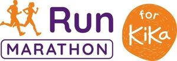

Trade Mark Journal No.2025/025 20 June 2025
WO0000001858176 (36,41)
Office of origin: Benelux Office for Intellectual Property (BOIP)
Date of International Registration:27 March 2025
Date of designation in the UK:
27 March 2025

The mark contains the colours orange, white and purple.
International priority date claimed: 27 September 2024
(Benelux Office for Intellectual Property (BOIP))
(1511551)
- Class 36
- Mutual funds and fundraising; collection of money for charitable purposes; organization of charitable collections; acquiring and collecting money, funds, subsidies and sponsorship money; monetary subsidies to charities; financial support of projects, organisations and institutions and payment of money for the benefit of charities; collection of monetary donations; charity collections; management of donated money and funds; financial advice regarding wills and legacies; information and advice regarding the aforementioned services; the aforesaid services also provided via the Internet, the cable network or other forms of data transfer.
- Class 41
- Organization of sporting, musical, educational and cultural events and competitions for charitable purposes; organization of events of an entertainment or relaxing nature for charitable purposes; education, educations, training and courses in the field of pediatric oncology; organizing and providing congresses, seminars, lectures and other educational activities in the field of pediatric oncology; organizing activities for educational purposes; educational services provided to schools in the field of pediatric oncology; organizing and conducting lotteries; prize draws (lotteries); conducting games of chance for charitable purposes; publishing, issuing, lending and distributing books, magazines, newspapers, brochures and other periodicals and publications, whether or not in electronic or digital form, including in the field of pediatric oncology and not relating to the cosmetic industry; the aforementioned services to support the raising of funds for charities; information and advice regarding the aforesaid services; the aforesaid services also provided via the Internet, the cable network or other forms of data transfer; all of the aforementioned services exclusively in the field of pediatric oncology including to support the raising of funds for charities in relation to pediatric oncology and expressly not in the field of broadcasting and expressly not in the field of broadcasting, media production, or other services primarily associated with television and radio networks.
Stichting Kinderen Kankervrij
Representative: Matchmark B.V., Herengracht 142, NL-1015 BW Amsterdam, NETHERLANDS